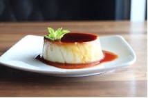

Japanese Cheesecake

The first recipe is Japanese cheesecake! This cake will absolutely blow your mind solely based on the texture and taste alone.
If you love cheesecake, but love the texture of a soft cloud, this is the perfect recipe for you.
It’s one of the easiest cakes you’ll ever make and there’s only 6 ingredients necessary.
It’s also a legendary recipe when it comes to Asian desserts and there are entire stores like Uncle Tetsu that are dedicated to making only Japanese cheesecakes.
If you’re worried about how long it’ll take to make, the prep time is 20 minutes and it takes an hour to bake, so you can make it in a jiff.
Try our easy and quick Japanese cheesecake recipe!
Dominican Flan
{kind=link}
The second recipe is flan! As a Dominican, flan is a staple in any Dominican house. If you love things like pudding, but want a more caramel flavor to it, our flan is the dessert of your dreams! It’s bouncy, creamy, and everything you would want out of your flan. The best part? There’s only 5 ingredients! So if it’s a cold winter evening and you’re too cozy in your house to go to the supermarket, you could probably make it with just the ingredients in your cupboard. You can also prep this in less than 15 minutes, so if you’re too lazy to invest too much time into making an impressive dessert, there’s nothing to worry about! If you want all of your guests jaws to drop, use our quick and easy flan recipe!